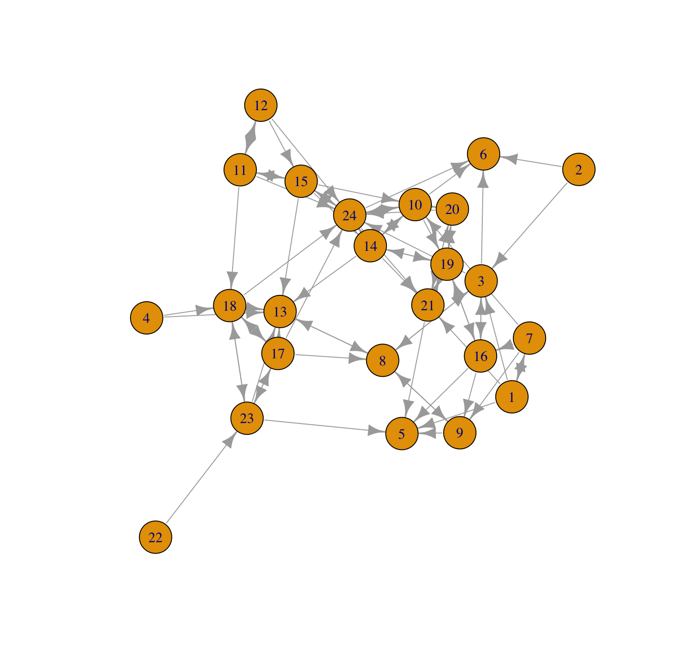
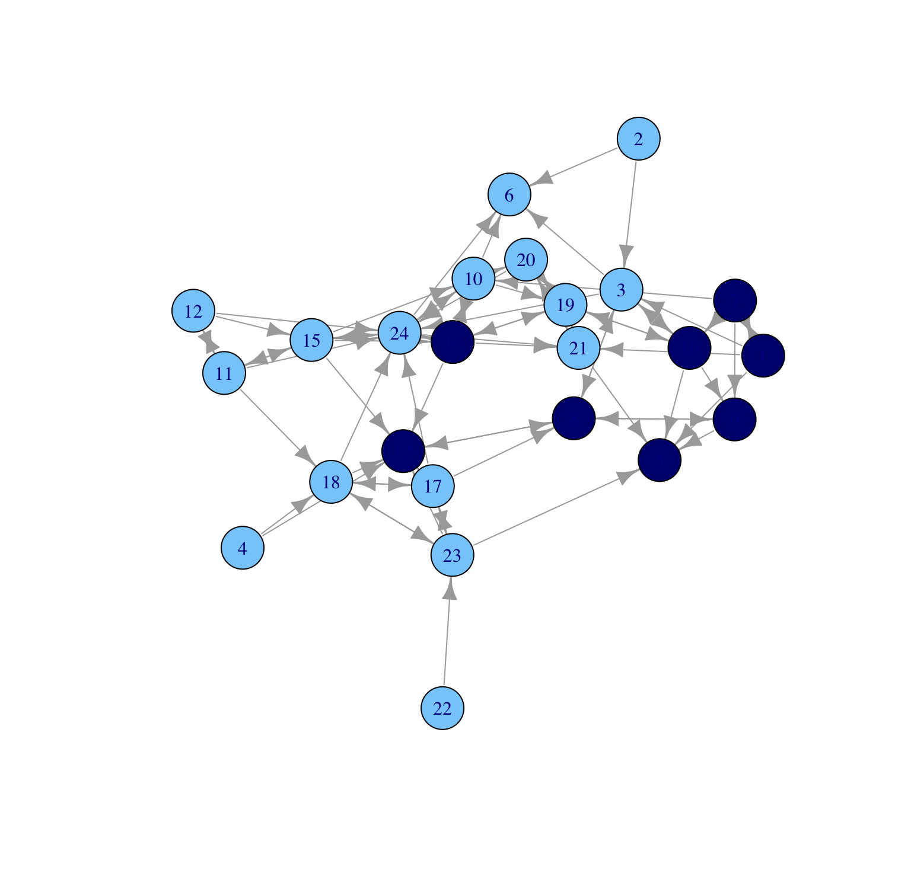

W3. Visualization
Network Visualization
- Focus on cross-sectional network data and cover basic network visualization
- Walk through the different approaches and options in detail
Please keep in mind
- We only cover a relatively small number of plotting options
- There isn’t one “magic” plot that is perfect for everything (mirage…unicorn…)
- If I could, I’d like to introduce R script that makes the perfect plot everytime
- A plot that works well for one network might not work for anotherü•≤
Setting up the Session
- The actors are students in a classroom and the relation of interest is friendship
Let’s see how it looks like
Let’s also read in the attribute file.
We begin using the igraph package.
Now we go ahead and construct the igraph object
Detailed information of our network
IGRAPH 5009c23 DNW- 24 77 --
+ attr: name (v/c), gender (v/c), grade (v/n), race (v/c), weight (e/n)
+ edges from 5009c23 (vertex names):
[1] 1 ->3 1 ->5 1 ->7 1 ->21 2 ->3 2 ->6 3 ->6 3 ->8 3 ->16 3 ->24
[11] 4 ->13 4 ->18 7 ->1 7 ->9 7 ->10 7 ->16 8 ->3 8 ->9 8 ->13 9 ->5
[21] 9 ->8 10->6 10->14 10->19 10->20 10->24 11->12 11->15 11->18 11->24
[31] 12->11 12->15 12->24 13->8 14->10 14->13 14->19 14->21 14->24 15->10
[41] 15->11 15->13 15->14 15->24 16->3 16->5 16->9 16->19 17->8 17->13
[51] 17->18 17->23 17->24 18->13 18->17 18->23 18->24 19->14 19->16 19->20
[61] 19->21 20->19 20->21 20->24 21->5 21->19 21->20 22->23 23->5 23->13
[71] 23->17 23->18 24->6 24->10 24->14 24->15 24->21Plot a network using igraph
- Ploting network offers an intuitive way of exploring the features of the network
- Looking at a picture of the network is a useful starting point for an analysis.
Let’s start with the default plotting in igraph.
And improve the graph!
- The plot does not tell us anything (gender, race, degree..)
- We begin by exploring gender divides in the network
- i.e., how strongly does gender map onto friendship groups?
And improve the graph!
- Let’s color the nodes by gender
And improve the graph!
Assign the gendered colorset to the network
And now we plot as before.
What is different?
- The network does divide along gender lines
- With one small group of boys and then a larger set of girls
- Two boys are not part of the ‘boy group’, and are disproportionately connected to girls
- What else?
What if?
- A researcher may also be interested in who is popular in the class
- We can identify it with Network Measure
What if?
- A researcher may also be interested in who is popular in the class
- We can identify it with Network Measure
Now we plot the network
- Put indegree value for the size of the nodes
Now we plot the network
- Make all the nodes a little bigger, but the nodes are still sized by indegree
Now we plot the network
- One boy (id 13) and one girl (id 24) receive a particularly high number of nominations
- Boys in the ‘boy group’ tend to have low indegree, as they are only friends with each other and there are few boys in the network.
Let’s improve the graph!
- Change the look of the nodes
Let’s improve the graph!
- Now we change the layout of the graph.
- layout_with_mds(Multi-Dimensional Scaling)
- calculate the distance between node i and j
- place nodes where the distance is preserved
- üëâ Good for showing the overall/global structure of the network
Let’s improve the graph!
- layout_with_kk(Kamada–Kawai)
- Assign the distnace between node i and j
- if direct edge exists, place the nodes closer together
- if not, place the nodes farther apart
- üëâ Good for highlighting local structures and communities
- Assign the distnace between node i and j
Let’s improve the graph!
- Now we change layout of a network.

Let’s improve the graph!
- Now we change layout of a network.
Let’s improve the graph!
- a number of other options a researcher could explore if they wanted to continue tweaking their plot.
- See the following help files for more options:
?plot.igraph?igraph.plotting
Done!
Please check KLMS for the assignment of this week
This week [Option] is a real fun
- you can excercise how to draw dynamic graph!
Questions?